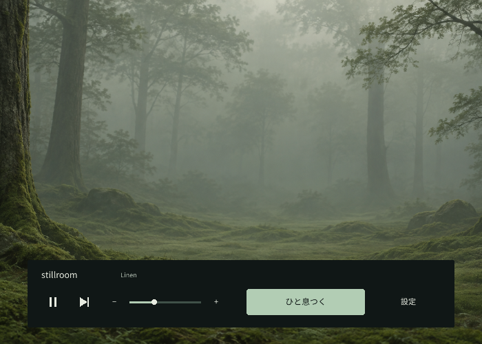
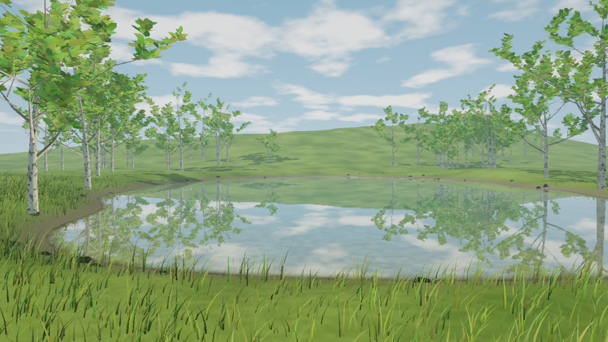
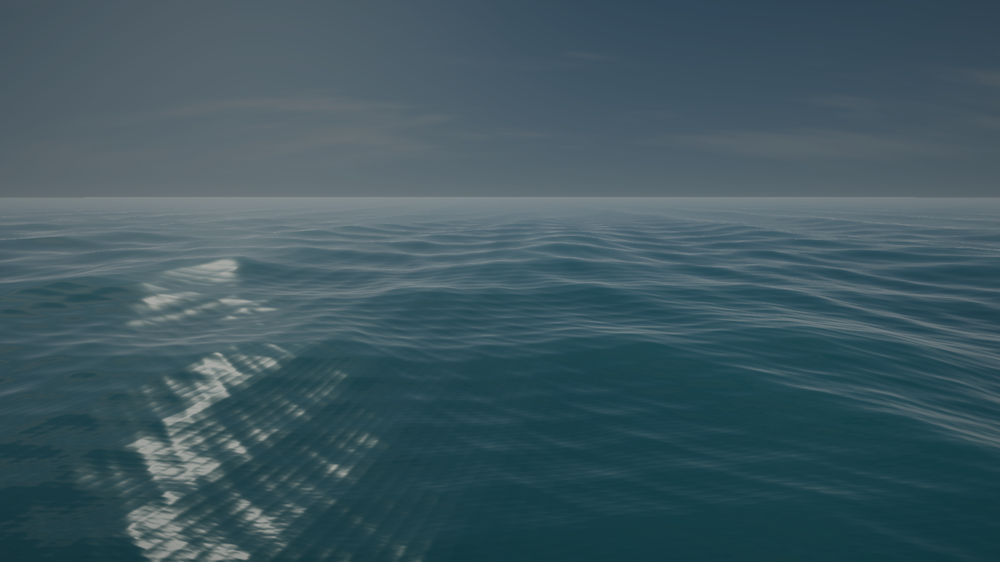

開けば、音楽が流れはじめる。
4つの内蔵曲で、そのまま始められます。自分の音楽フォルダーも使えて、曲のつなぎ目はやわらかく。選曲のために何度も手を止める必要はありません。
音楽と静かな画面のための、小さなアプリ
音楽と静かな背景で、作業に集中するためのWindowsアプリ。ひと息つきたくなったら、背景をクリック。音楽はそのまま、穏やかな風景に切り替わります。
Windows版をダウンロードWindows x64 · 無料・オープンソース · 0.8

静かな背景と、必要なときだけの操作。
選んでおいた風景を、しばらく眺める。
Esc で戻る。音楽はそのまま続きます。
作業しているあいだは
4つの内蔵曲で、そのまま始められます。自分の音楽フォルダーも使えて、曲のつなぎ目はやわらかく。選曲のために何度も手を止める必要はありません。
落ち着いた単色や好きな画像を、好みの明るさで。全画面では、しばらく触れないと操作欄も隠れます。空いているモニターを静かな背景で満たしたり、小さなウィンドウで音楽を流したり。
少し、作業から目を離すときに
AIの返事を待つあいだや、少し疲れたとき。スマホに手を伸ばす代わりに、水面や森をぼんやり眺める。そんな短い休み時間のための風景です。


水面、森、星空、淡い光。好きな風景と動き、明るさを、設定であらかじめ選べます。休むたびに選び直す必要はありません。
この11の風景では、選択肢もタイマーも出てきません。背景をもう一度クリックするか、Escで作業の画面へ。休む長さは、自分で決められます。
休息の、もうひとつの過ごし方 New in 0.8
小さなトロッコに乗って、湖や森、草原をのんびり抜けていく。流れる景色を眺めても、降りて自由に歩いても。自動散歩に任せることもできます。
これは休息に選べる「旅」の風景。Escで作業に戻ると、旅の続きは次のひと息まで待っています。
旅について詳しく休息の風景は、アプリがその場で生成します。旅の最初の準備には数秒かかることがあります。
アカウント登録も、アプリからの通信も、利用状況の収集もありません。音楽と設定は、手元のPCに保存されます。
Haskellとraylibで作られたWindowsアプリです。日本語と英語に対応し、MITライセンスで公開しています。
まずは、いつもの作業のそばに
ZIPを展開して、stillroom.exe を開くだけ。
内蔵の音楽が流れはじめ、静かな単色の画面が広がります。
好きな音楽や背景、休息の風景は、あとから設定で。
ひと息つきたくなったら、操作欄の外の背景をクリックしてください。
Windows x64 · 初期段階の署名なしのアプリです。
「旅」には、余裕のあるグラフィックス性能をおすすめします。